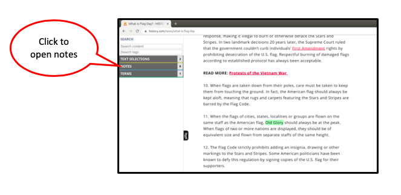

To open a
term in the Study View :
- A nub for your term appears in the gutter on the right side of your webpage
Clicking on the nub shows you the term you have made, as well as the highlighted text on the page.
- The term also appears in the sidebar on the left side of the webpage.
- To access the sidebar, click on the handle on the left side of your webpage.
Click the Terms header to show terms in this view.

-
Clicking a particular term in the side bar will open the term and show its selection if there is one.